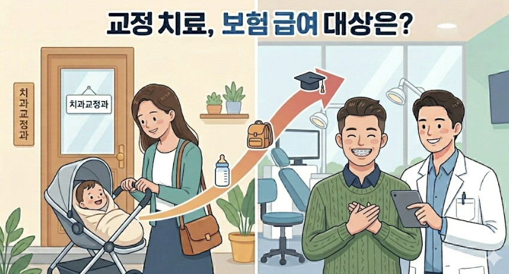

교정 치료는 대표적인 비급여 분야, 즉 건강보험을 적용하지 않는 분야입니다. 나라에서는 교정치료가 "미용 목적"의 성격이 강하다고 보고 있는 것이죠. 보통은 맞습니다. 평균 2년 정도의 시간을 들여 치열이 가지런해지고, 돌출된 입이 들어가고, ...
그런데 대학병원 진료실에는 선천적인 질환으로 인해 아주 어릴 때부터 교정 치료를 시작해, 성인이 될 때 마무리되는 환자분들도 계십니다. 이런 경우는 "미용 목적"이 아니라 "질환 치료의 목적"의 교정에 해당하여, 나라에서도 보험을 적용해줍니다.
상담을 하다보면 간혹 보험 적용을 받을 수 있는데도 모르고 계시는 분들이 계셔 이참에 한 번 정리해보려고 합니다.

크게 두 그룹으로 나뉩니다.
구순구개열 — 구개열 (입천장 갈라짐), 구순열 (입술 갈라짐) 동반한 구개열, 구순열 동반한 치조열 (잇몸뼈 갈라짐)
선천성 악안면 기형 — 총 114개 질환 포함 (예: 크루존 증후군, 두개골 유합증, 트리쳐-콜린스 증후군, 소이증 등)
간혹 주걱턱이나 비대칭이 너무 심한 환자분들이 "저는 이 정도면 보험이 되지 않나요?"라고 여쭤볼 때가 있는데, 안타깝게도 단순 골격성 부정교합은 현재까지는 급여 교정 치료의 대상이 되지 않습니다.
또한 치조열 단독으로만 있는 경우 역시 안타깝지만 급여 교정 치료의 대상이 되지 않는다고 합니다.
서두에서도 말씀드렸듯, 구순구개열 혹은 선천성 기형을 가진 환자분들은 적절한 시기마다 필요한 교정치료가 있습니다.
총 7가지 교정 치료 항목에 대해 아래와 같은 본인부담률이 적용됩니다. (2026.04.07. 기준)
구순구개열: 서울대학교 치과병원 기준 본인부담률 40%
선천성 악안면 기형(희귀질환 산정특례 대상자): 본인부담률 10%
급여 교정은 모든 치과에서 시행되는 것은 아닙니다. 치과교정과 전문의가 1인 이상 상근하면서 다음 중 하나에 해당해야 하는데요.
(1) 레지던트 수련 치과병원
(2) 종합병원/상급종합병원 (의과-치과 협진 체계 구축)
(3) 위 기관과 협진 연계 협약을 맺은 치과병원 혹은 치과의원
즉, 쉽게 말해 의과병원과 협진 체계를 갖춘 대학병원의 치과교정과 혹은 대학병원과 공식적 협진 체계를 갖춘 전문 기관입니다.
해당 기관을 정하셨다면
구순구개열 환자의 경우 바로 급여 가능 기관의 치과교정과 전문의에게 내원하시면 됩니다.
선천성 악안면 기형 환자의 경우 우선 의과 병원에서 해당 질환으로 진단을 받은 뒤, 건강보험공단에 희귀질환 산정특례 등록을 하셔야 합니다. 그 이후 급여 가능 기관의 치과교정과로 내원하시면 산정특례 등록 여부를 확인하고, 해당 질환이 114개 급여 목록에 포함되는지 확인하는 절차가 있습니다.
대학 병원에 근무하다보니, 미용과는 전혀 무관하게 교정 치료가 꼭 필요한 환자들을 자주 보게 됩니다.
안타깝게도 급여 대상 질환에 해당하지 않아 혜택을 받지 못하는 경우도 가끔은 있습니다.
그럼에도 선배 선생님들과 교수님들의 노력으로 이런 제도가 만들어진 덕분에 많은 환자분들이 조금 더 가벼운 마음으로 치료를 받을 수 있게 된 것 같아 참 다행이라는 생각이 듭니다.
앞으로 더 많은 분들이 혜택을 받을 수 있도록 급여 범위가 넓어지길 기대해 봅니다 :)
또한, 이 글은 참고용으로 급여 적용 여부는 개인별 진단명과 상황에 따라 달라질 수 있으니, 정확한 내용은 치과교정과 전문의와 직접 상담하시길 권장드립니다!
이상 교정과의사 손창한이었습니다.